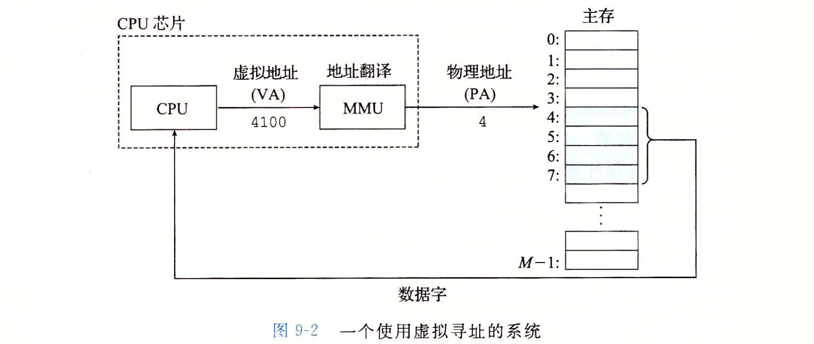
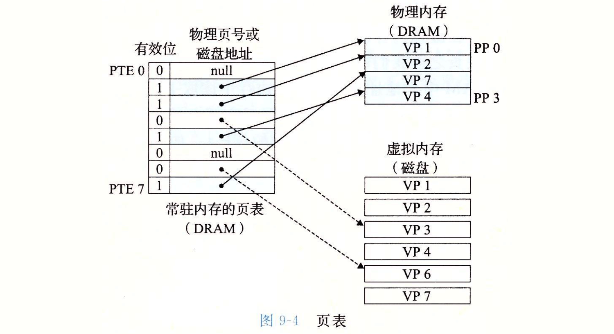
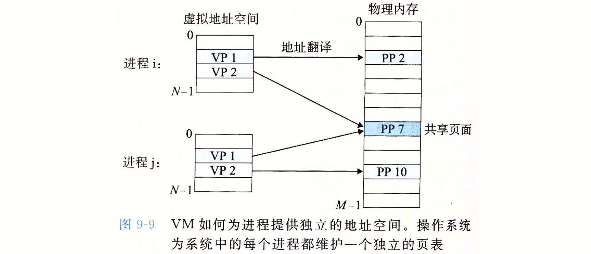
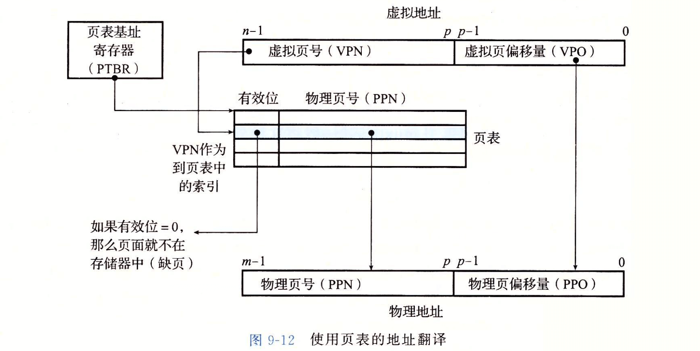
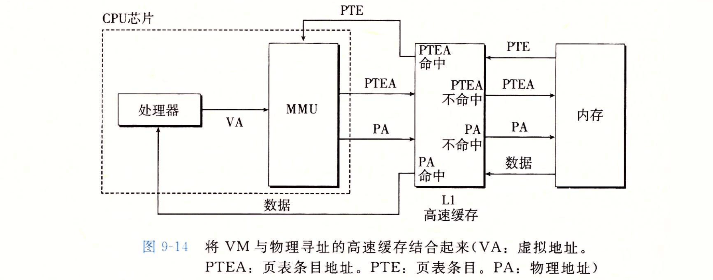
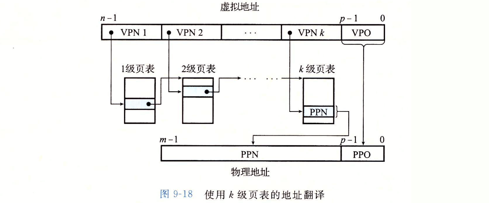
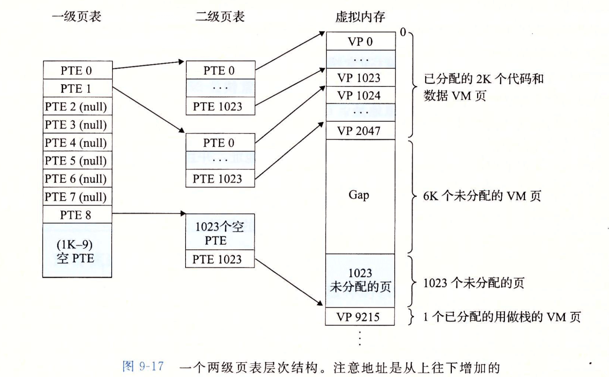
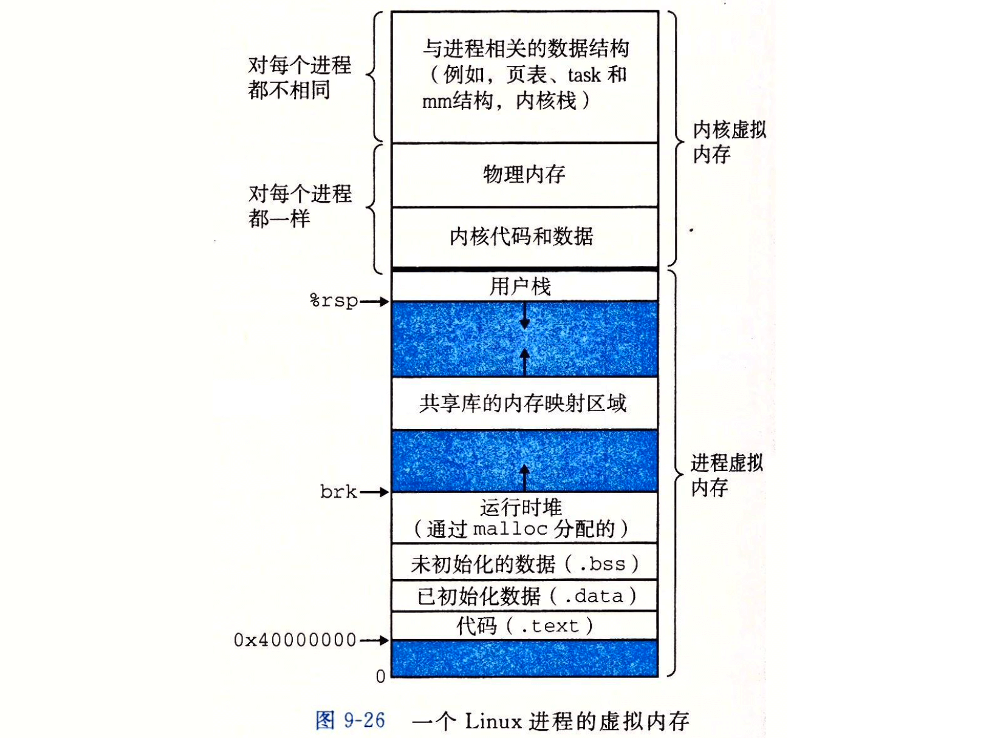
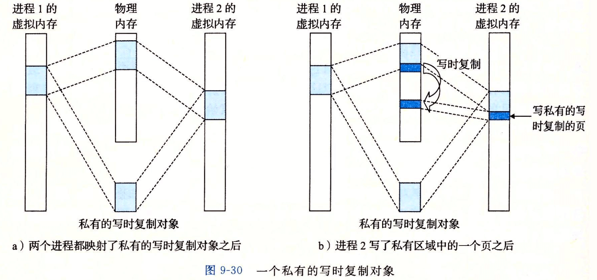

《CSAPP（第三版）》读书笔记（第 9-12 章）
书接上文，本文为第 9-12 章的笔记。其中最后三章（10-12），由于其主题本身的内容（系统级 I/O、网络编程、C++ 并发编程）可以通过讲解的更为深入的其他整本书籍来进行学习，因此这里先不花时间记录，后面如果有需要再回来了解。
第九章、虚拟内存
- Page 560物理寻址与虚拟寻址：
- 物理寻址：直接对物理内存位置进行寻址（早期 PC 通常使用的方式）。所有可用的地址段组成了“物理地址空间（PAS）”；
- 虚拟寻址：CPU 通过一个虚拟地址（VA，Virtual Address）来访问主存，该地址在被送到内存之前会由 MMU 转换为适当的物理地址。全部的可用虚拟地址组成了一个“虚拟地址空间（VAS）”。现代系统通常支持 32 位或 64 位虚拟地址空间。

- “虚拟内存”的基本思想使得每个数据对象都可以有多个独立的地址，其中每个地址都选自一个不同的地址空间（“共享库”的实现基础）。
- Page 561虚拟内存作为缓存的工具：
- 虚拟内存被组织为一个由存放在磁盘上的 N 个连续字节大小的单元组成的数组，每字节都有一个唯一的虚拟地址。磁盘上数组的内容被缓存在主存。同 L1/L2 等高速缓存类似，磁盘上的数据也被分割成块，来作为磁盘与主存之间的“传输单元”。虚拟内存系统将虚拟内存分割为“虚拟页”，类似的，物理内存被分割为“物理页”，也被称为“页帧”；
- 虚拟页的三种状态：
- 未分配的：虚拟内存系统还未分配（或未创建）的页。没有任何数据与它们相关联，因此不占用任何磁盘空间；
- 缓存的：当前已缓存在物理内存中的已分配的页；
- 未缓存的：未缓存在物理内存中的已分配的页。
- 因为大的不命中处罚和访问第一个字节的开销（连续读很快，而第一个字节的寻址可能很慢），虚拟页往往很大，通常为 4KB~2MB；
- 页表（存放在物理内存中）：

- 将虚拟页映射到物理页。每次地址翻译硬件（MMU）将一个虚拟地址转换为物理地址时，都会读取页表。操作系统负责维护页表的内容，以及在磁盘与 DRAM 之间来回传送页；
- 页表项（PTE）中的“有效位”表明该虚拟页当前是否被缓存在 DRAM 中。若地址字段有效，但却没有设置有效位，则该地址指向该虚拟页在磁盘上的起始位置；
- 地址翻译硬件将使用“虚拟地址”来索引页表条目，若该条目的有效位为 0，则触发一个“缺页异常”。该异常将调用内核中的处理程序，该程序会选择一个牺牲页（被替换掉的物理内存页），然后从磁盘读取相应的请求的页内容，并存放到物理内存中，同时更新页表项；
- 按需页面调度：“当有不命中发生时，才换入页面”的这种策略；
- 常驻集合：根据“局部性”原理，程序一般会趋向于在一个较小的活动页面集合上工作。而当该集合的大小大于物理内存后，程序将会处于“抖动”状态，即页面将不断地换进换出。

- 实际上，操作系统为每个进程都提供了一个独立的页表，对应独立的虚拟地址空间。而多个虚拟页面可以映射到同一个共享物理页面上；
- 虚拟内存的四个“简化”：
- 简化链接：允许每个进程的内存映像使用相同的基本格式，而不管实际的数据存放在物理内存的何处；
- 简化加载：Linux 加载器为代码和数据段分配虚拟页，并把它们标记为“无效”（未缓存），然后通过
mmap将页表条目指向目标文件中适当的位置。而只有当某条指令真正引用到了某个内存位置时，虚拟内存系统才会按照需要自动调入数据页； - 简化共享：提供了一个管理用户进程和操作系统自身之间共享的一致机制。每个进程拥有独立的私有数据，操作系统创建页表，将相应的虚拟页映射到不连续的物理页上。
- 简化内存分配：为应用分配的额外的堆空间时，分配的虚拟内存页面是连续的，而实际映射到的物理内存却可能是分散的。
- Page 567虚拟内存作为内存保护的工具：每个进程对应的独立页表中还添加了与页访问权限相关的标志位（“是否可写”、“是否可读”、“是否只能在内核模式下访问”等）。若一条指令访问了没有权限的页，则 CPU 将触发一个“一般保护故障”，并将控制权传递给内核中的一个异常处理程序。
- Page 567地址翻译：是一个从 VAS 到 PAS 之间的映射。

- CPU 中的“页表基址寄存器（PTBR）”指向当前页表（不同进程有不同的页表地址）。n 位的虚拟地址包含两个部分：一个 p 位的虚拟页面偏移（VPO）和一个 n-p 位的虚拟页号（VPN）。MMU 利用 VPN 来选择 PTE，而将从页表得到的具体的物理页号与 VPO 串联起来，就能得到物理地址；
- 当请求页面命中时，CPU 硬件的执行步骤：
- 第一步：处理器生成一个虚拟地址，并把它传送给 MMU；
- 第二步：MMU 生成 PTE 地址，并从高速缓存/主存请求得到它；
- 第三步：高速缓存/主存向 MMU 返回 PTE；
- 第四步：MMU 构造物理地址，并把它传送给高速缓存/主存；
- 第五步：高速缓存/主存返回请求的数据字给处理器。
- 当缺页时，CPU 硬件的执行步骤：
- （前三步与上述相关）；
- 第四步：PTE 中的有效位是 0，所以 MMU 触发了一次异常，传递 CPU 中的控制到操作系统内核中的缺页异常处理程序；
- 第五步：缺页处理程序确定出物理内存中的牺牲页，如果该页被修改了，则将其换出到磁盘（写回）；
- 第六步：缺页处理程序页面调入新的页面，并更新内存中的 PTE；
- 第七步：缺页处理程序返回到原来的进程，再次执行导致缺页的指令。
- 结合高速缓存与虚拟内存：

- 大多数系统选择“物理寻址”的方式来访问 SRAM；
- “地址翻译”发生在高速缓存查找之前，因此 SRAM 无需关心访问保护的问题；
- PTEA（页表条目地址）是由 VPN（虚拟页号）与 PTBR（页表基址寄存器）的值通过一定的计算得来的。
- 使用 TLB 加速地址翻译：
- TLB（Translation Lookaside Buffer，翻译后备缓冲器）是一个硬件，属于 MMU 的一部分；
- 解决的问题：加速 MMU 根据虚拟地址来查询 PTE 的过程（正常情况下需要经过内存访问，来从页表中提取表项内容）；
- 可以从 TLB 中快速查询得到一个“页表项”，页表项中存放的 PPN（物理页号）可以用于与 VPO 结合形成一个实际的物理内存地址；
- 用于从 TLB 中查询表项的 “TLB 索引（TLBI）”与 “TLB 标记（TLBT）”需要从虚拟地址的 VPN（虚拟页号）字段中提取。其结构与 SRAM 类似，需要首先通过索引查出某一路，然后找到该路中，与标记值相等的那个条目的 PPN 值。
- Page 571多级页表：用来压缩页表 。

- 虚拟地址被划分为多个 VPN 与 1 个 VPO，每个 VPN i 都是一个到第 i 级页表的索引；除最后一级外，每一级页表中的 PTE 都指向下一级的某个页表的基址。最后一级页表中的每个 PTE 包含某个物理页面的 PPN，或一个磁盘块的地址；
- 只有一级页表才需要总是在主存中的，虚拟内存系统可以在需要时创建、页面调入或调出二级页表，这减少了主存的压力；
- TLB 能够为上述多级页表的地址翻译进行加速。
- 一个两级页表的层次结构（32 位）：

- 一级页表中的每个 PTE 负责映射虚拟地址空间中的一个 4MB 的片（1024 个）。二级页表中的每个 PTE 负责映射虚拟地址空间中的一个 4KB 的片（1024 个）；
- 假设使用 4KB 大小的 PTE，则上述一二级页表大小均为 4KB（等于页大小）。
- Page 577Core i7 地址翻译概况：
- CR3 控制寄存器指向第一级页表（L1）的起始位置。CR3 的值是每个进程上下文的一部分，每次上下文切换时，CR3 的值都会被恢复；
- 每一个级别的 L1~L4 PTE 都决定了下一个表首地址的一部分（对应 PPN 位，剩余位置补零）；而每一个 VPN 1~4 都决定了下一个表项在表中的具体偏移量；最后的“页表”决定了目标物理页的所在位置；
- 每一个 PTE 表项中都含有一些特殊的位（R/W、U/S、XD、D 等）以表明所访问子页表（或物理子页）相关的信息（可读、可访问、可取指、是否被修改等）；
- 在优化的情况下，SRAM 可以提前通过 CI 和 CO（正好对应 VPO 的位数）来找到待匹配的一组数据。等到 PPN 计算之后，便可以直接计算出标记位的值来查找对应目标数据是否在这组缓存的数据中。若没有，则再经由下一级高速缓存或主存进行查找；
- 每个进程都有自己私有的页表层次结构。
- Page 580Linux 虚拟内存系统：

- 内核虚拟内存的某些区域被映射到所有进程共享的物理页面，比如每个进程共享内核的代码和全局数据结构；
- Linux 也将一组连续的虚拟页面（大小等于系统中 DRAM 的总量）映射到相应的一组连续的物理页面。以便于内核访问物理内存中的任何特定位置；
- Linux 缺页异常处理流程：
- 检测请求的虚拟地址是否在某个区域内（各个合法段结构）？缺页处理程序搜索区域结构的链表，将该地址与每个区域结构的起始地址进行比较，若非法则触发“段错误”；
- 检测请求的虚拟地址是否合法（权限是否得当）？
- 若请求正常，则选择一个牺牲页，如果该页内容被修改过，则将其写回到磁盘，并换入新的页面同时更新页表。当缺页程序返回时，CPU 重新执行引起缺页的指令。
- Page 582内存映射：Linux 通过将一个虚拟内存区域与一个磁盘上的对象关联起来，以初始化这个虚拟内存区域的内容。虚拟内存区域可以映射到这两种类型的对象中的一种：
- Linux 文件系统中的普通文件：一个区域可以映射到一个普通磁盘文件的连续部分，文件区被分成页大小的片，每一片包含一个虚拟页面的初始内容。如果区域比文件区要大，则用零填充；
- 匿名文件：匿名文件由内核创建，包含的全是二进制零。CPU 第一次引用这样一个区域的虚拟页面时，内核会在物理内存中找到一个合适的牺牲页，并用二进制零覆盖牺牲页（数据可能被换出）同时更新页表，将这个页面标记为是驻留在内存中的。磁盘与内存之间没有实际的数据交换过程，又被称为“请求二进制零的页”。
- Page 583共享对象和私有对象：
- 共享对象：
- 多个进程可以在其各自的虚拟地址空间中（VAS）共享同一个对象在物理内存中的同一个副本。其在物理内存中的副本不一定是连续的，会由 MMU 负责按“页”进行映射；
- 对象的识别可以通过其“文件名”进行。
- 私有对象：

- 对于一个映射到私有对象的区域做的改变，对于其他进程是不可见的；
- 基于“写时复制（COW）”进行映射。只要没有进程试图写它自己的私有区域，它们就可以继续共享物理内存中对象的一个单独副本。而一旦有一个进程试图写私有区域内的某个页面，那么这个写操作就会触发一个保护故障。此时，故障处理程序会在物理内存中创建该页面的一个新副本，并更新页表条目指向这个新的副本，然后恢复这个页面的可写权限；
- Page 586可以使用
mmap函数创建新的虚拟内存区域，并将对象映射到这些区域中。同理，munmap用来删除虚拟内存。 - Page 587动态内存分配器（兼具应用内存分配和回收算法的职责）：维护着一个进程的虚拟内存区域，即“堆”。对于每个进程，内核维护着一个变量 “brk”，它指向堆的顶部。例如
std::malloc等动态内存分配器，可以通过使用 mmap 和 munmap 函数，显式地分配和释放堆内存，或还可以使用sbrk函数来扩展和收缩堆（一般分配小内存可能使用sbrk/brk，大块内存会使用mmap）。 - Page 590（隐式空闲链表 & 显式空闲链表）
第十章、系统级 IO
（略）
第十一章、网络编程
（略）
第十二章、并发编程
（略）